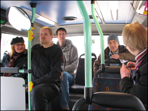
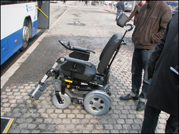
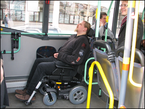
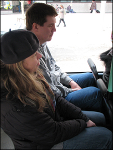

|  Artikkelin kuvat: Tampereen joukkoliikenne |
EU-standardit ja - direktiivit määrittelevät/määräävät esimerkiksi kurkun käyryyden ja tuotteiden kokoja. Huhtikuun 1 päivänä v. 2011 PIKRY halusi tutkia - on sattuneesta syystä kertynyt epäluuloja EU-standardeihin nähden - ison pyörätuolin mahtumista EU-direktiivi 2001/85 mukaista ramppia pitkin Tampereen kaupunkiliikenne liikelaitoksen (TKL) bussiin, sekä bussin sisällä olevaan em. EU-direktiivin mukaiseen pyörätuolin kiinnityslaitteeseen. |
Aiemmin oli IT-lehdessä artikkeli testistä, jossa todettiin pienen ja keskikokoisen
pyörätuolin sopivuus. Siinä ei ollut asia esillä ollenkaan pitkän ihmisen näkökulmasta.
Niinpä nyt PIKRY oli testaamassa pitkälle ihmiselle tehdyn isokokoisen pyörätuolin mahtumista
EU-direktiivin määräämiin mittoihin. Kokeiltiin sekä iso manuaalinen- että iso
sähköpyörätuoli.
| Bussipysäkille Tampereen keskustassa kokoontui sopiva testausjoukko sovittuun aikaan klo 12. Oli pitkiä pikryläisiä, TKL:n ja Tampereen joukkoliikenneyksikön edustajat, esteettömyysasiamies, mediaa. Oli TAYS:ista apuvälineteknikko Harri Antila tuoden testausvälineeksi ison sähköpyörätuolin. Olivat Jukka Tala ja Topi Tala tuoden testausvälineeksi Talart OY:n mittatilaustyönä 210-senttiselle valmistaman manuaalipyörätuolin. |  |
Jukka Tala sponsoroi PIKRY’ä kustantamalla ko. pyörän kuljetuksen tilaisuuteen toiselta
puolelta Suomea. Iso kiitos siitä!
|  | Molemmat isot pyörätuolit mahtuivat ajamaan ramppia pitkin bussiin. Ramppi kestää 350 kg painon. (Direktiivi: Rampin on kestettävä turvallisesti 300kg paino). Sähköpyörätuoli painaa n. 145 kg. Tuolissa istuja- kantamuksineen - saa painaa siis enintään 205kg. Molemmille p-tuoleille oli kiinnityslaitteen säätövara riittävän pitkä. Pyörätuoli kiinnitettiin selkä menosuuntaan. Selän taakse jäi sopivasti kiinnityslaitteen huomattavan korkea selkänoja. |
Korkeus ei ihan riittänyt pisimmälle testaajalle. Kehitysaiheena tuli muistiinmerkityksi,
että selkätuki pitää olla vielä korkeampi. Lisäksi tukeen tarvitaan säätömahdollisuus.
Ihmisillä voi olla eri selänpituus, vaikka kokonaispituus olisi sama.
"Tampereen esteettömyysasiamies Jukka Kaukola riemuitsee: On menty hienosti eteenpäin
valtavan huonosta järjestelmästä". Näin kirjoitti aiheesta paikalla ollut toimittaja
Jutta Matsson 2.4. Aamulehdessä. Tampereella on nyt 8 TKL:n bussia, jotka sopivat
sähköpyörätuoleille. Bussit on merkitty pyörätuolisymboleilla. Tänä vuonna busseja
saadaan yli 10 lisää. Arvio on, että v 2020 kaikissa TKL:n busseissa on ko. palvelut.
Manuaalipyörätuoleilla on TKL:n kyytiin ollut pääsy tähänkin asti, koska ne ovat
kevyempiä kuin sähköpyörätuolit ja rampit kestävät niiden painon.
Paikalla olivat Tampereen joukkoliikenneyksiköstä joukkoliikenneinsinöörit
Juha-Pekka Häyrynen ja Tero Myyryläinen sekä TKL:sta ajomestari Esa Suurniemi.
|
He tarkastelevat pitkien ihmisten mittoja ja mahtumista istumaan, seisomaan, kulkemaan ovesta, käykö pää kattoon jne. Mahtuvatko kahdet hartiat rinnakkain?
Pitääkö istua sivuttain, uppoavatko siis polvet edessä olevan penkin selkänojaan? Miten kengät mahtuvat jalkatilaan? Miten istuinten muodot soveltuvat pitkälle selälle?
Tukeeko pään tuki päätä eikä vain hartioita? Bussi oli tyypiltään Volvo 8700LE/B7RLE 4x2. Se oli uusi, vain puolen vuoden ikäinen ja siinä on Tamperetta varten räätälöity direktiivejä väljempi mitoitus. EU esimerkiksi vaatii istumasyvyydeksi 65cm, tässä bussissa se on 71cm. |
 |
Bussissa on riittävä matkustusmukavuus pitkällekin ihmiselle.
Vielä on jotain kehitettävää. Bussiin saisi mahtua nykyisen yhden sijasta kaksi pyörätuolilla
matkustavaa. Lähdemmehän me muutkin shoppailemaan ja asioille mielellämme ystävämme kanssa,
suotakoon hyvä seura ja vertaistuki myös pyörätuolia tarvitseville. Siitä on jo tehty päätös,
että pysäkkejä korotetaan, jotta ramppi asettuu sopivaan kaltevuuteen.
Kirj. Maiju Havinen
PIKRY on aiemmin testannut / tutkinut säädettävyyttä / kokoja: autot, kondomit,
kuntosalilaitteet, ITSE-tila (asuminen), esteettömyysseminaari: rollaattori - liikkumisen
koeradat, sairaalasängyt